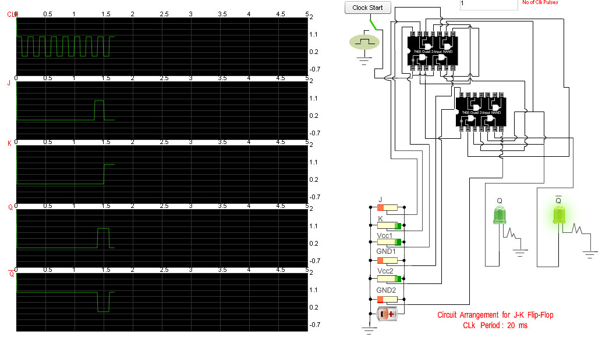
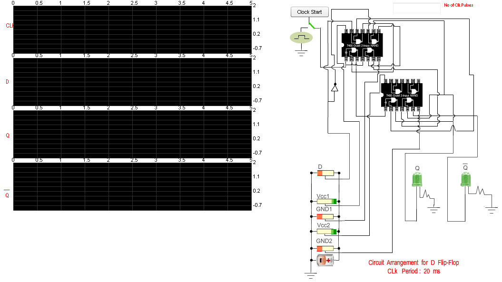
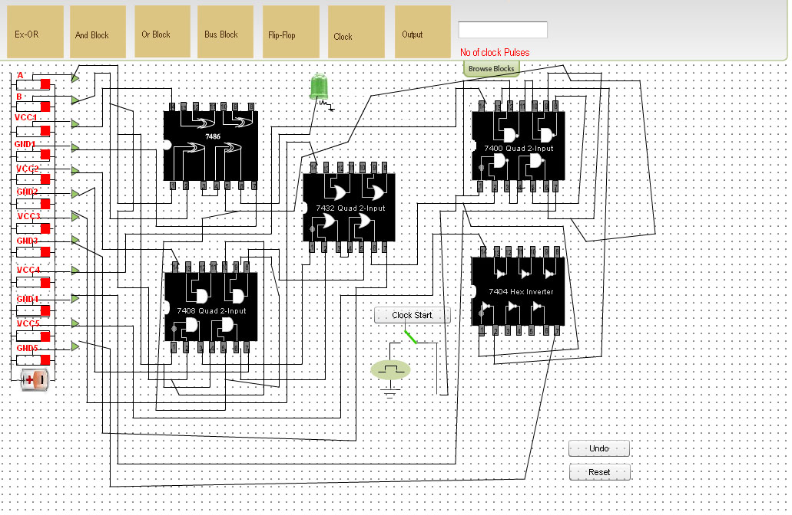
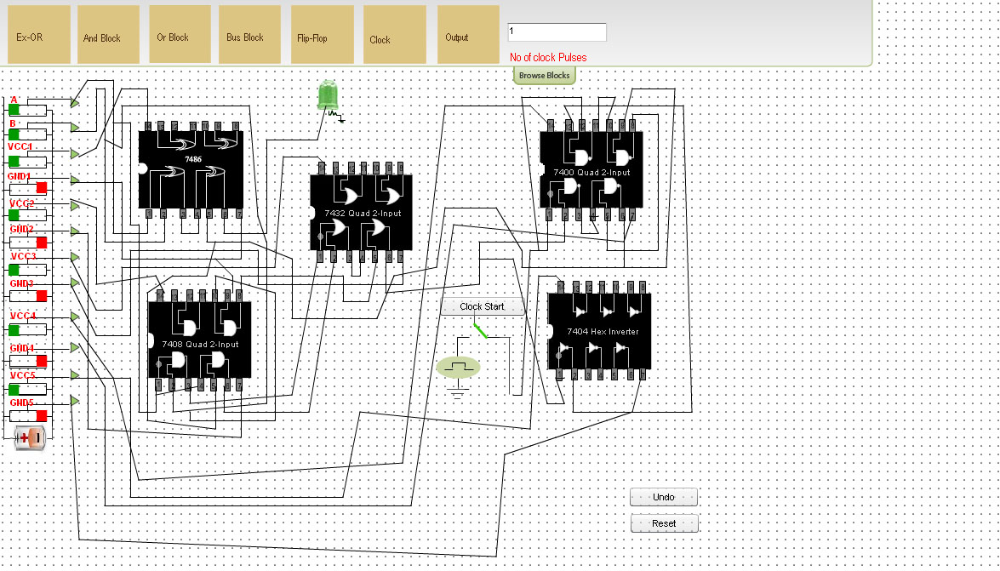

Introduction
About the Experiment
This experiment enables a student to learn
- How to realize the functionality of sequential circuits using basic flip-flops
- How to verify the operation of a combinational circuit using flip-flop(D Flip-Flop)

Theory
Sequential Circuits: The logic circuits whose outputs at any instant of time depend not only on the present input but also
on the past outputs are called sequential circuits.
The simplest kind of sequential circuit which is capable of storing one bit of information is called latch.The operation of basic latch can be modified, by providing an additional control input that determines, when the state of the circuit is to be changed.
The latch with additional control input is called the Flip-Flop.The additional control input is either the clock or enable input.
Different types of Flip-Flop: There are four basic types, namely, S-R, J-K, D and T Flip-Flops.

Figure 1: Clocked NOR-based S-R Flip-Flop

Figure 2: NAND-based S-R Flip-Flop

Figure 3: Typical wave-form in S-R Flip-Flop

Figure 4: S-R Flip-Flop characteristic Table
NOTE :: clk, S and R signals are input signals
Qand Q : Output signals
The simplest kind of sequential circuit which is capable of storing one bit of information is called latch.The operation of basic latch can be modified, by providing an additional control input that determines, when the state of the circuit is to be changed.
The latch with additional control input is called the Flip-Flop.The additional control input is either the clock or enable input.
Different types of Flip-Flop: There are four basic types, namely, S-R, J-K, D and T Flip-Flops.
S-R Flip-Flop
Figure 1: Clocked NOR-based S-R Flip-Flop
Figure 2: NAND-based S-R Flip-Flop
Figure 3: Typical wave-form in S-R Flip-Flop
Figure 4: S-R Flip-Flop characteristic Table
Qand Q : Output signals
J-K Flip-Flop
Figure 1: J-K Flip-Flop using S-R Flip-Flop
Figure 2: NAND based J-K Flip-Flop

Figure 3: Typical wave-form in J-K Flip-Flop

Figure 4: J-K Flip-Flop characteristic Table
D Flip-Flop

Figure 1: D Flip-Flop

Figure 2: NAND-based D Flip-Flop

Figure 3: D Flip-Flop characteristic Table
Synthesis using Flip-Flop
As a simple exersise,students can verify the operation of a serial (sequential)adder(1 bit full adder)
Carry output of a one bit full adder can be fed back to the input of a D Flip-Flop.The output of this Flip=Flop can be fed back to the carry input of that adder.

Figure 1: Verification of the functionality of a combinational circuit using seqential element(Flip-Flop)

Figure 2: Gate diagram of combinational circuit(1 bit full adder)

Figure 3: Truth table of a 1 bit fulladder

Objective
Aim of the Experiment
The objective of part 1 of the experiment is to fully understand the functionality of S-R Flip-Flop.
The objective of part 2 of the experiment is to fully understand the functionality of J-K Flip-Flop.
The objective of part 3 of the experiment is to fully understand the functiponality of D Flip-Flop.
The objective of part 4 of the experiment is to verufy the functiponality of i bit full adder(Combinational Circuit) using D Flip-Flop.

Procedure
Please follow these steps to do the experiment.
- 1. At first apply high voltage to Vcc1 & Vcc2.So that the "Clock Start" button
will be enabled.
- 2. Next, start the clock pulse by clicking on the "Clock Start" button and after generation of some clock pulses stop
the clock pulse by clicking on the"clock Stop" button .

- 3. Now apply high voltage to S input and low voltage to R input and set "No of clock pulses" to 1.See the changes at output(Q and Q) at positive clock edge.

- 4. Now apply high voltage to R input and low voltage to S input and start the clock pulse.See the changes at output(Q and Q) at positive clock edge.

- 5. Next,apply low voltage to both the inputs(S and R) and start the clock pulse again.See the changes at output(Q and Q) at positive clock edge.

- 6. Next,apply high voltage to both the inputs(S and R) and start the clock pulse again.See both the outputs(Q and Q) will be zero.It is "not allowed" condition.

Please follow these steps to do the experiment(Part-II)
- 1. At first apply high voltage to Vcc1 & Vcc2.So that the "Clock Start" button
will be enabled.

- 2. Next, start the clock pulse by clicking on the "Clock Start" button and after generation of some clock pulses stop
the clock pulse by clicking on the"clock Stop" button .
- 3. Now apply high voltage to J input and low voltage to K input and set "No of clock pulses" to 1.See the changes at output(Q and Q) at positive clock edge.

- 4. Now apply high voltage to K input and low voltage to J input and start the clock pulse.See the changes at output(Q and Q) at positive clock edge.

- 5. Next,apply low voltage to both the inputs(J and K) and start the clock pulse again.See the changes at output(Q and Q) at positive clock edge.

- 6. Next,apply high voltage to both the inputs(J and K) and start the clock pulse again.See both the outputs(Q and Q) will toggle at positive clock edge.

Please follow these steps to do the experiment(Part-III)
- 1. At first apply high voltage to Vcc1 & Vcc2.So that the "Clock Start" button
will be enabled.

- 2. Next, start the clock pulse by clicking on the "Clock Start" button and after generation of some clock pulses stop
the clock pulse by clicking on the"clock Stop" button .

- 3. Now apply high voltage to D input and set "No of clock pulses" to 1.See the changes at output(Q and Q) at positive clock edge.

- 4. Now apply low voltage to D input and start the clock pulse.See the changes at output(Q and Q) at positive clock edge.

Please follow these steps to do the experiment(Part-IV)
- 1. At first click on the "Browse Block" button.

- 2. Next, click on the Ex-or block .
- 3. Now drag the Ex-or block and place it on the bread board.

- 4. In the same way drag all the blocks and place them on the bread board according to the following manner.

- 5. Next,click on the first node of the "Bus Block" and start to make a connection with the first pin of the Ex-or Block.
- 6. Now conection with the first pin of the Ex-or block is completed .
- 7. In the same way we can proceed in making circuit connection.
- 8. Now Circuit connection is completed. In this circuit connection sixth pin of NAND block is connected to the fifth pin
of Ex-or block.Here output of D Flip-Flop is fed to the Cin input of the combinational circuit(one bit full adder).

- 9. Next, apply high voltage to Vcc1, Vcc2, Vcc3, Vcc4, Vcc5 and also apply low volage to GND1, GND2, GND3, GND4, GND5 and set No of clock pulses to 1.So only one clock pulse is generated and then clock is stopped.Apply low voltage to both the inputs A and B and start the clock pulse.One clock pulse is generated and S = 0, Cout = 0.Because at this clock edge Cin = 0(Cin = Cout of previous clock edge).

- 10. Apply high voltage to both the inputs A and B and start the clock pulse.One clock pulse is generated and S = 0, Cout = 1.Because at this clock edge Cin = 0(Cin = Cout of previous clock edge).

- 11. Again start the clock pulse.Now S= 1, Cout = 1.Because at this clock edge Cin = 1(Cin = Cout of previous clock edge).
- 12. Next apply low voltage to both the inputs A and B.Again start the clock pulse.Now S= 1, Cout = 0.Because at this clock edge Cin = 1(Cin = Cout of previous clock edge).
- 13. Again start the clock pulse.In this clock edge we will see S = 0, Cout = 0.Because at this clock edge Cin = 0(Cin = Cout of previous clock edge).

- 14. We can verify the outputs(S and Cout) for all the combinations of A, B, Cin.

Simulator

|
|
Part 1: Analysis and Synthesis of Sequential Circuits using S-R Flip Flop
Click here for the javascript simulator

Quizzes
Test Your Knowledge!!

Reference
Books:
- Digital Principles and Applications, by Leach and Malvino.
- Digital Logic Design, Leach, by Malvino, and Saha
- Engineering Digital Design, by Richard F. Tinder.
- Digital Logic and Computer Design, by M. Morris Mano
- Digital Systems: Principles and Applications, Neal S. Widmer , Ronald J. Tocci , Gregory L. Moss
Video Lectures: